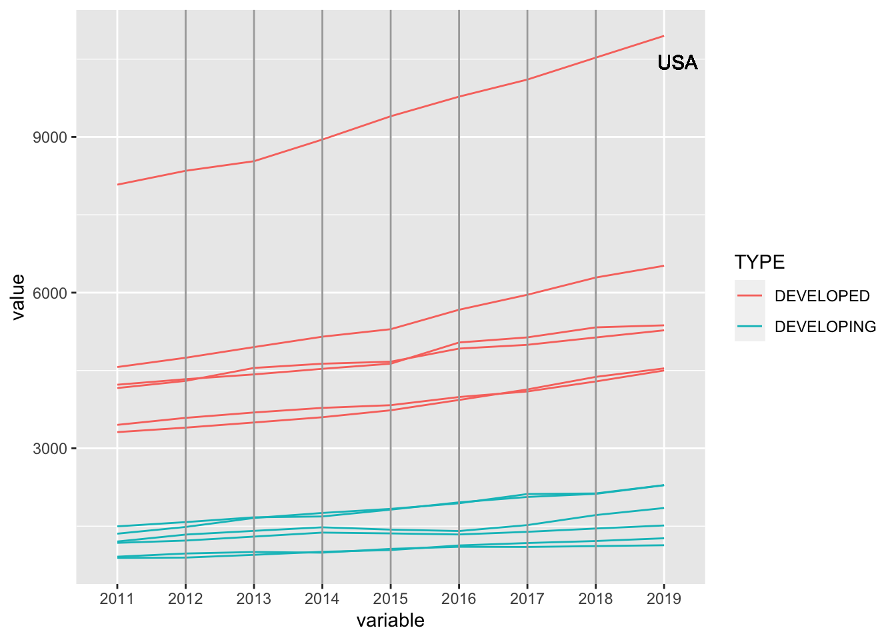
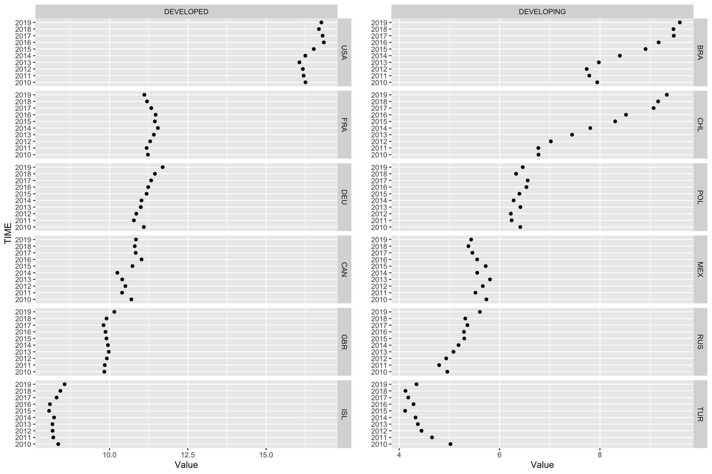

Chapter 5 Results
5.1 Total health expenditure
5.1.1 Trends of total health expenditure in various countries
From the time series plot above, we could find that total health expenditure of all countries kept increasing. After standardization, we can see that Brazil, Chili, Russia and Turkey had significant growth trends, and they were all developing countries; while Canada, Germany, France, the United Kingdom and the United States had relatively slow growth, and all of them were developed countries. To be specific, compared with developing countries, health expenditure in most developed countries were growing stably and slowly.
5.1.2 Trends of total health expenditure per capita in various countries

From the parallel coordinate plot above, we could find that total health expenditure per capita of all countries showed an upward trend year by year. What’s more, the expenditure per capita of developed countries was much higher than that of developing countries, and developed countries had more obvious growing trends over year. To be specific, the health expenditure per capita of the United States was much higher than other countries from 2011 to 2019, which also grew more quickly from 2014 to 2019.
5.1.3 Trends in the ratio of total health expenditure to GDP in various countries

From the cleveland dot plot above, we could find that the ratio of total health expenditure to GDP of developed countries was much higher than that of developing countries. To be specific, the ratio of the United States was much higher than that of other countries, which exceeded 15% while others all lower than 12%.
As for developed countries on the left, all six countries showed a fluctuating trend, increasing and decreasing alternatively around one certain value.
As for developing countries on the right, six countries varied a lot. Brazil, Chili and Russia showed a growing trend, and Chili increased most significantly, Poland and Mexico showed a fluctuating trend, while Turkey showed a descending trend.
5.2 Expenditure on different medical products and services
5.2.1 Expenditure on different medical products and services in different countries in 2019
From the heatmap above, we could find that HC11HC21 and HC13HC23 have the most prominent colors, followed by HC5 and HC3, while HC4, HC7, HC6 and HC0 have relative light colors, which means that inpatient and outpatient curative and rehabilitative care takes dominant position in health expenditure, followed by medical goods and long term care, and the proportions of the other fours, ancillary services, governance and health system and financing administration, preventive care and other health care services are not much.
Moreover, as for inpatient curative and rehabilitative care, Russia expended the most; as for outpatient curative and rehabilitative care, the United states was higher than others; as for long term care, Canada, Germany, France, the United Kingdom and Iceland spent more than the other countries, and they are all developed countries.
5.2.2 Expenditure on different medical products and services in developed and developing countries in 2019
From the stacked bar charts above, we could find that compared to developed countries, developing countries expended more on inpatient curative and rehabilitative care (HC11HC21), ancillary services (HC4) and medical goods (HC5), less on long term care (HC3) and governance and health system and financing administration (HC7).
From the left plot of developed countries, the United States spent more on outpatient curative and rehabilitative care (HC13HC23), less on inpatient curative and rehabilitative care and long term care than France and the the United Kingdom.
From the right plot of developing countries, Russia spent more on inpatient curative and rehabilitative care, less on outpatient curative and rehabilitative care and long term care than Brazil and Poland.
5.2.3 Expenditure trend of different medical products and services in USA and Poland
From the multiple line chart above, we could find that from 2010 to 2019, the top three health expenditures on different medical products and services of both the United States and Poland were inpatient curative and rehabilitative care (HC11HC21), outpatient curative and rehabilitative care (HC13HC23) and medical goods (HC5).
As for the United States, the expenditure on different medical products and services did not change obviously. Moreover, the proportion of outpatient curative and rehabilitative care exceeded 40% with an increasing trend, which was significantly higher than that of other functions.
As for Poland, except for the top three health expenditures mentioned above, the expenses for other functions did not change a lot. What’s more, from 2014 to 2016, inpatient curative first decreased obviously and then returned to the initial level, while outpatient curative first increased significantly and then decreased slightly. Both changes were in the same time period, which indicated that the demand for inpatient curative converted to outpatient curative during this time.
5.3 Expenditure on different organizations and actors that deliver health care goods and services
5.3.1 Expenditure on different providers in different countries in 2010 and 2019
From the grouped bar charts above, we could find that compared to 2010, the ratio of each provider’s medical expenditure to total health expenditure in 2019 did not change much, but the proportion of expenditure among each provider varied. To be specific, health expenditures of most countries were concentrated on hospitals (HP1), providers of ambulatory health care (HP3) and retailers and other providers of medical goods (HP5), but little on residential long-term care facilities (HP2), providers of preventive care (HP6) and providers of health care system administration and financing (HP7).
Now, we focus on Turkey. In Turkey, hospitals accounted for as high as 50% in 2019 with an obvious growth compared to 2010, while the proportions of ambulatory health care and providers of medical goods decreased from 2010 to 2019, which indicated that as time went, people in this country tended to go to the hospital for treatment rather than go to institutions that provide medical care services.
5.3.2 Trend of the expenditure on hospitals in different countries
From the alluvial diagram above, we could find that from 2015 to 2019, the expenditure percentage on hospital of Poland kept growing, while that of Germany kept descending; Countries such as Iceland, France, the United Kingdom and Turkey first increased and then decreased, it was worth noting that three of four are developed countries; the remaining four countries, i.e., Russia, Mexico, the United States and Canada did not have an obvious trend, their changing rates constantly varied in positive and negative directions.
As for time dimension, we could find that from 2015 to 2016, the expenditure percentage on hospital of most countries kept increasing or decreasing, from 2016 to 2017 and 2018 to 2019, there was no change in growth or decline trend for more than half of the countries; from 2017 to 2018, half of the countries changed, which was the most chaotic time period.
5.3.3 Correlation between different providers
From the biplot above, we could find that HP3 (providers of ambulatory health care) and HP7 (providers of health care system administration and financing), HP5 (retailers and other providers of medical goods) and HP6 (providers of preventive care) form small angles, which means that the expenditure percentage of ambulatory health care and health care system administration and financing, medical goods and preventive care are highly correlated. What’s more, the angles between HP1 (hospitals), HP2 (residential long-term care facilities), HP3 and HP7, HP5 and HP6 are nearly 90 degrees, which means that apart from the four previously mentioned providers, there is basically no relationship between the expenditure percentages of other providers.